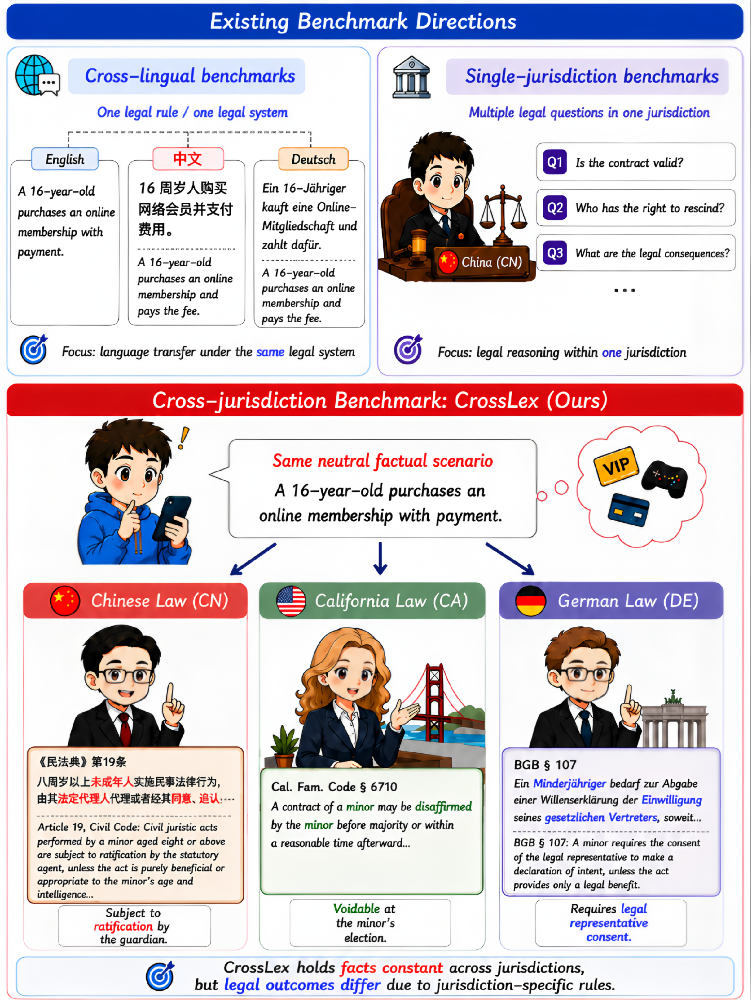
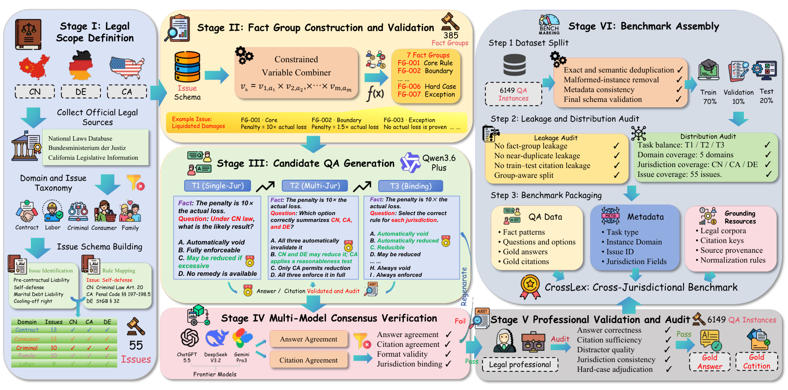
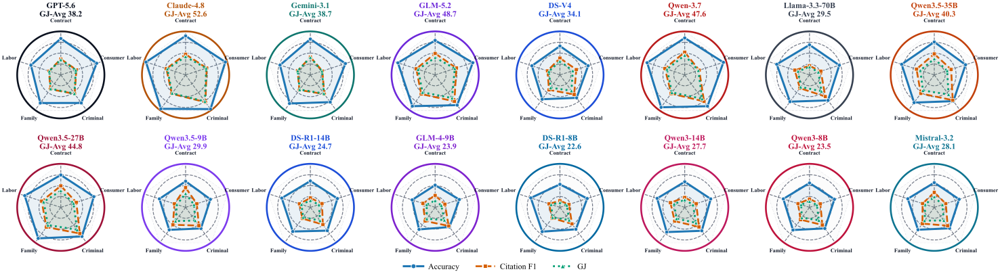
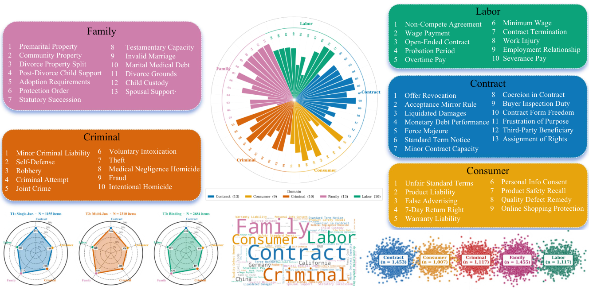

一句话读懂这篇论文
为什么普通法律 QA 测不出跨法域能力
如果问题、答案和法律来源都只属于一个法域，模型即使把记忆中的规则套上去，也可能得到一个看似合理的分数。但真实国际法律咨询经常要求比较多个司法辖区，错误迁移规则会比普通知识缺失更危险。

CrossLex 的核心设定：相同或高度对齐的事实，在不同法域中可能对应不同法律规则、结论与权威来源。
数据将事实组跨法域对齐，要求模型先识别法域，再选择适用规范，避免把“事实相同”误读成“法律结论相同”。
正确结论如果引用了错误辖区、错误法条或无法支撑该主张的来源，仍然属于高风险回答。
从权威法律来源构造同事实跨法域样本

数据构造与评测框架：法律专家围绕事实组、法律议题、答案和来源进行跨法域对齐。
事实组对齐
同一个事实场景在三个法域下展开，控制事实差异，让评测聚焦法律差异。来源绑定
每个问题配套法条、判例或官方材料，答案和引用由法律专业人员审阅。分层评估
分别测单法域正确性、跨法域比较能力和细粒度来源支撑。CrossLex 的关键控制变量是 same-fact：如果不同法域的输入事实本来就不一样，模型得分无法说明它是否真正理解了 jurisdictional variation。
三类任务逐步增加跨法域难度
给定一个法域，回答法律问题并提供对应来源，测基础法律知识和 source grounding。
面对同一事实在多个法域的版本，要求并列说明规则、结论和差异原因。
把复杂回答拆成细粒度判断点，检查每个结论和引用是否与目标法域、具体主张相匹配。
| 维度 | 核心问题 | 暴露的能力 |
|---|---|---|
| Correctness | 结论是否正确 | 法律规则理解 |
| Jurisdiction alignment | 是否用对法域 | 跨法域规则选择 |
| Source grounding | 来源能否支撑主张 | 引用与证据绑定 |
| Comparison quality | 能否解释差异 | 同事实对比推理 |
模型“会答”不等于“会跨法域比较”

不同模型在多个法域和法律领域的表现并不均衡；跨法域比较与来源一致性会进一步拉开差距。
论文的总体观察是：当前模型在单法域法律问题上经常可以给出正确或近似正确的答案，但一旦要求同时比较多个法域，准确的规则迁移、差异解释和来源引用就明显变难。模型可能把一个法域的规范套到另一个法域，或者结论正确但引用无法支撑该结论。

评测分布显示，不能只用单一平均分判断模型的跨法域可靠性，应观察不同法域、领域和任务的分项差异。
把“答对”和“有来源依据”联合起来
结论碰巧正确，但引用了另一法域的法规、过时材料或与主张无关的来源。
引用确实属于目标法域，但模型错误理解或错误应用了来源中的规则。
这一指标设计对法律 RAG 尤其重要：检索命中不是终点，系统还要验证来源的法域、时效、适用范围，以及它是否真的支持答案中的每个关键主张。
对跨境法律 Agent 的工程启示
检索、向量库、引用和答案结构都应显式记录法域，不能仅依赖自然语言上下文。
对同事实问题分别生成法域内规则卡片，再做差异归因，降低跨法域直接迁移的风险。
将答案拆成可验证主张，逐条检查来源是否属于正确法域、版本是否有效、证据是否足够。
局限与边界
CrossLex 最重要的价值不是给模型排一个总榜，而是把“法域识别、规则差异、来源支撑”从隐含要求变成可独立测量的能力。